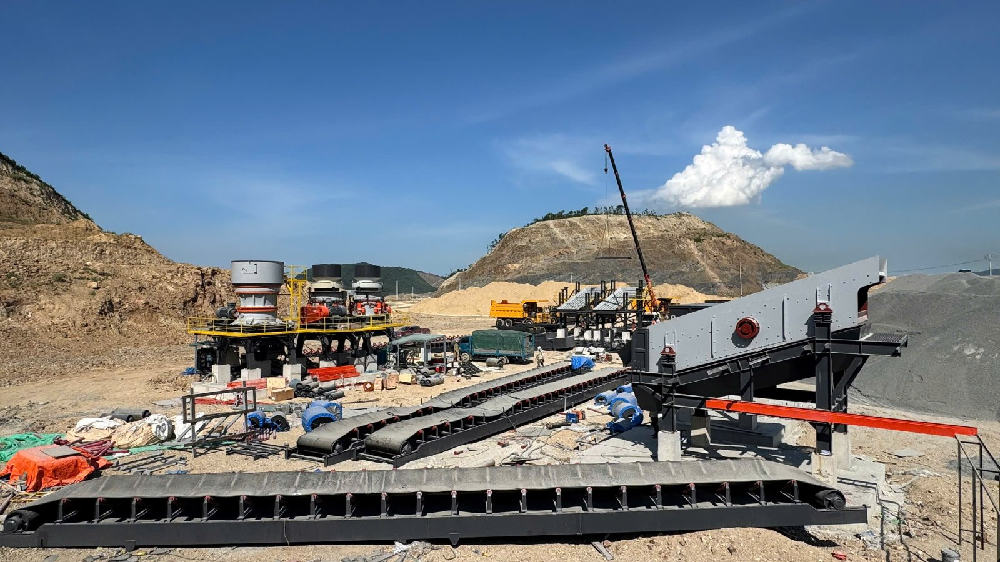
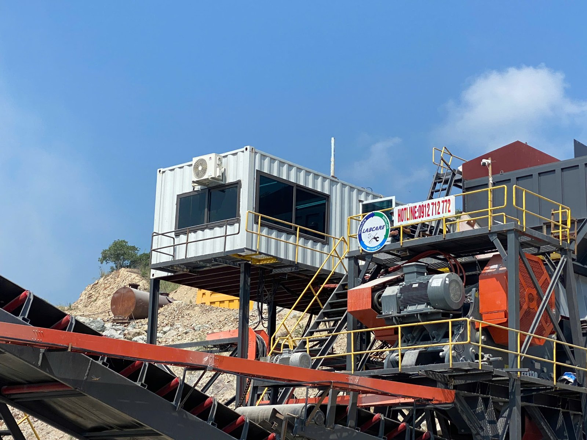
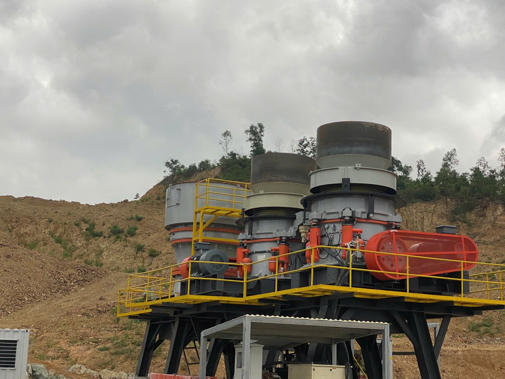
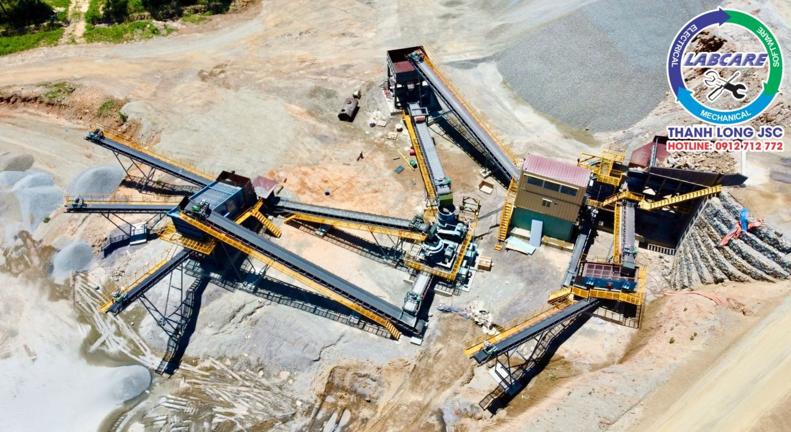

Đầu tư trạm nghiền đá 650 TPH tại Thanh Hóa – Xu hướng phát triển sản xuất vật liệu xây dựng
Trong ngành khai thác và sản xuất vật liệu xây dựng, công suất dây chuyền nghiền đá là một trong những yếu tố quyết định khả năng cung ứng sản phẩm, chi phí sản xuất và hiệu quả đầu tư dài hạn.
Đối với các mỏ đá có trữ lượng lớn, nhu cầu sản xuất liên tục và cung cấp vật liệu cho những dự án hạ tầng quy mô lớn, đầu tư trạm nghiền đá xây dựng công suất 650 TPH tại Thanh Hóa là phương án đáng được nghiên cứu.
Trạm nghiền đá 650 TPH là hệ thống nghiền và sàng đá được thiết kế với năng lực xử lý mục tiêu khoảng 650 tấn nguyên liệu mỗi giờ. Dây chuyền có thể được cấu hình để sản xuất nhiều loại đá xây dựng như đá 1x2, đá 2x4, đá 4x6, đá base, đá mi và các sản phẩm cấp phối khác theo yêu cầu.

Thanh Long JSC – Máy nghiền đá Thanh Long cung cấp giải pháp tư vấn thiết kế, lựa chọn thiết bị và triển khai dây chuyền nghiền đá công suất lớn tại Việt Nam
Tuy nhiên, một trạm nghiền đá công suất 650 TPH không đơn giản là lắp đặt những máy nghiền có kích thước lớn. Điều quan trọng nhất là thiết kế được hệ thống đồng bộ, phù hợp với đặc tính nguyên liệu và tỷ lệ sản phẩm đầu ra.
Vì sao nên đầu tư dây chuyền nghiền đá 650 TPH tại Thanh Hóa?
Thanh Hóa là địa phương có nguồn tài nguyên đá làm vật liệu xây dựng và nhu cầu cung ứng vật liệu cho các công trình giao thông, khu công nghiệp, đô thị và dự án hạ tầng.
Đối với những doanh nghiệp khai thác đá quy mô lớn, việc đầu tư dây chuyền công suất cao mang lại nhiều lợi thế.
Chủ động sản lượng đá xây dựng

Một dây chuyền nghiền đá 650 TPH có năng lực xử lý danh nghĩa khoảng 650 tấn nguyên liệu mỗi giờ.
Nếu vận hành theo công suất thiết kế:
-
8 giờ/ngày: khoảng 5.200 tấn nguyên liệu.
-
10 giờ/ngày: khoảng 6.500 tấn nguyên liệu.
-
12 giờ/ngày: khoảng 7.800 tấn nguyên liệu.
Đây là sản lượng xử lý lý thuyết, chưa tính thời gian dừng máy, tổn thất nguyên liệu và các yếu tố vận hành thực tế.
Với năng lực này, chủ mỏ có thể chủ động hơn trong việc xây dựng kế hoạch cung cấp vật liệu cho các công trình cần khối lượng đá lớn.
Tối ưu chi phí sản xuất trên mỗi tấn đá
Đối với trạm nghiền đá công suất lớn, hiệu quả kinh tế không chỉ phụ thuộc vào giá mua thiết bị mà còn liên quan trực tiếp đến:
-
Điện năng tiêu thụ trên mỗi tấn thành phẩm.
-
Chi phí vật tư hao mòn.
-
Chi phí nhân công vận hành.
-
Hiệu suất nghiền và sàng phân loại.
-
Tỷ lệ đá thành phẩm có giá trị thương mại.
-
Thời gian dừng máy để bảo trì.
-
Khả năng vận hành ổn định trong thời gian dài.
Khi dây chuyền được thiết kế và vận hành phù hợp, công suất lớn có thể giúp phân bổ chi phí cố định trên sản lượng cao hơn.
Tuy nhiên, hiệu quả này chỉ đạt được khi mỏ có nguồn nguyên liệu, nhu cầu tiêu thụ và điều kiện vận hành tương ứng.
Trạm nghiền đá 650 TPH có thể sản xuất bao nhiêu tấn đá thành phẩm mỗi ngày?

Đây là một trong những câu hỏi quan trọng nhất khi chủ đầu tư nghiên cứu dây chuyền nghiền đá công suất lớn.
Về lý thuyết, trạm nghiền 650 TPH vận hành 10 giờ mỗi ngày có thể xử lý khoảng 6.500 tấn nguyên liệu/ngày.
Tuy nhiên, cần phân biệt rõ ba khái niệm:
Công suất danh nghĩa: Năng lực xử lý theo điều kiện thiết kế.
Công suất vận hành thực tế: Lượng nguyên liệu được xử lý trong điều kiện hoạt động thực tế.
Sản lượng thành phẩm thương mại: Lượng sản phẩm đáp ứng yêu cầu kỹ thuật và có thể tiêu thụ.
Ba giá trị này không phải lúc nào cũng bằng nhau.
Ví dụ, nếu một dây chuyền vận hành với công suất xử lý thực tế trung bình 550 TPH trong 10 giờ, tổng lượng nguyên liệu xử lý là khoảng 5.500 tấn.
Lượng đá thành phẩm thương mại còn phụ thuộc vào thành phần nguyên liệu, tỷ lệ loại bỏ đất và tạp chất, sản phẩm yêu cầu và hiệu suất thu hồi.
Do đó, khi đầu tư trạm nghiền 650 TPH, chủ mỏ nên yêu cầu đơn vị thiết kế làm rõ công suất đầu vào, công suất từng thiết bị và sản lượng thành phẩm dự kiến.
Đầu tư trạm nghiền đá 650 TPH tại Thanh Hóa cần bao nhiêu vốn?
Chi phí đầu tư trạm nghiền đá 650 TPH không có một mức cố định, bởi mỗi dự án có điều kiện nguyên liệu, mặt bằng và yêu cầu sản phẩm khác nhau.
Các hạng mục ảnh hưởng đến tổng vốn đầu tư gồm:
-
Máy cấp liệu và máy nghiền sơ cấp.
-
Máy nghiền côn thứ cấp, tam cấp nếu cần.
-
Hệ thống sàng rung.
-
Máy nghiền VSI nếu có.
-
Hệ thống băng tải.
-
Kết cấu thép, sàn thao tác và cầu thang.
-
Móng bê tông và hạ tầng lắp đặt.
-
Tủ điện, cáp điện và hệ thống điều khiển.
-
Vận chuyển, lắp đặt và chạy thử.
-
Hệ thống xử lý bụi và các hạng mục môi trường theo yêu cầu.
Bên cạnh vốn đầu tư ban đầu, chủ mỏ cần tính toán chi phí vận hành trong suốt vòng đời thiết bị.
Một dây chuyền có giá mua ban đầu thấp nhưng tiêu hao điện năng, vật tư hao mòn lớn hoặc thường xuyên dừng máy chưa chắc mang lại hiệu quả kinh tế tốt.
Vì vậy, bài toán đầu tư nên được đánh giá theo chi phí sản xuất trên mỗi tấn đá thành phẩm, thay vì chỉ so sánh giá mua máy.
Những yếu tố quyết định hiệu quả đầu tư dây chuyền nghiền đá 650 TPH

Đặc tính đá nguyên liệu
Đá vôi, granite, bazan và các loại đá khác có đặc tính nghiền, độ mài mòn và yêu cầu thiết bị khác nhau.
Cần xác định đúng loại đá, độ cứng, độ mài mòn, độ ẩm và kích thước đầu vào trước khi thiết kế.
Tỷ lệ sản phẩm đầu ra
Cùng một công suất 650 TPH nhưng dây chuyền ưu tiên sản xuất đá base sẽ có phương án công nghệ khác với dây chuyền cần tỷ lệ đá 1x2 cao.
Vì vậy, chủ đầu tư cần xác định cơ cấu sản phẩm ngay từ giai đoạn lập phương án.
Cân bằng tải giữa các thiết bị
Một dây chuyền có máy nghiền công suất lớn nhưng sàng hoặc băng tải không đủ năng lực vẫn có thể không đạt sản lượng mục tiêu.
Do đó, cần tính toán cân bằng vật liệu và tải tuần hoàn trong toàn bộ hệ thống.
Bố trí mặt bằng
Bố trí mặt bằng hợp lý giúp giảm chiều dài vận chuyển nội bộ, thuận lợi cho bảo trì và hạn chế giao cắt giữa các tuyến vận hành.
Khả năng bảo trì và cung cấp phụ tùng
Với trạm nghiền đá công suất lớn, thời gian dừng máy có thể ảnh hưởng đáng kể đến kế hoạch sản xuất.
Chủ đầu tư cần xem xét khả năng thay thế vật tư hao mòn, tiếp cận thiết bị và hỗ trợ kỹ thuật sau lắp đặt.
Thanh Long JSC – Giải pháp đầu tư trạm nghiền đá 650 TPH tại Thanh Hóa
Thanh Long JSC – Máy nghiền đá Thanh Long cung cấp giải pháp tư vấn thiết kế, lựa chọn thiết bị và triển khai dây chuyền nghiền đá, nghiền cát nhân tạo phục vụ ngành khai thác và sản xuất vật liệu xây dựng tại Việt Nam.
Đối với các chủ mỏ đang nghiên cứu đầu tư trạm nghiền đá xây dựng công suất 650 TPH tại Thanh Hóa, việc xây dựng phương án thiết bị cần dựa trên dữ liệu thực tế thay vì sử dụng một cấu hình chung cho mọi loại nguyên liệu.
Các thông tin cần chuẩn bị gồm:
-
Loại đá và đặc tính nguyên liệu.
-
Kích thước đá nguyên khai lớn nhất.
-
Công suất xử lý mục tiêu.
-
Các loại sản phẩm cần sản xuất.
-
Tỷ lệ từng loại sản phẩm.
-
Số giờ vận hành mỗi ngày.
-
Điều kiện mặt bằng và nguồn điện.
-
Yêu cầu về môi trường và phương án vận hành.
Từ những thông tin này, đội ngũ kỹ thuật có thể nghiên cứu sơ đồ công nghệ, lựa chọn thiết bị và xây dựng phương án bố trí dây chuyền phù hợp.
Điểm quan trọng khi đầu tư trạm nghiền đá 650 TPH không chỉ là đạt công suất lớn mà còn là tạo ra đúng loại sản phẩm thị trường cần, với chi phí vận hành được kiểm soát.
Câu hỏi thường gặp về trạm nghiền đá 650 TPH tại Thanh Hóa
Trạm nghiền đá 650 TPH là gì?
Trạm nghiền đá 650 TPH là hệ thống nghiền và sàng đá được thiết kế với công suất xử lý mục tiêu khoảng 650 tấn nguyên liệu mỗi giờ. Dây chuyền phù hợp với các mỏ đá quy mô lớn khi có nguồn nguyên liệu và nhu cầu tiêu thụ tương ứng.
Trạm nghiền đá 650 TPH gồm những máy nào?
Một cấu hình điển hình gồm phễu chứa, máy cấp liệu rung, máy nghiền hàm, máy nghiền côn, sàng rung, hệ thống băng tải và điện điều khiển. Máy nghiền VSI có thể được bổ sung khi cần chỉnh hình đá hoặc sản xuất cát nhân tạo.
Trạm nghiền đá 650 TPH sản xuất được bao nhiêu tấn mỗi ngày?
Nếu vận hành 10 giờ ở công suất danh nghĩa 650 TPH, dây chuyền có thể xử lý lý thuyết khoảng 6.500 tấn nguyên liệu/ngày. Sản lượng thực tế phụ thuộc vào nguyên liệu, thời gian hoạt động và hiệu suất vận hành.
Trạm nghiền đá 650 TPH có sản xuất được đá 1x2 và đá base không?
Có. Dây chuyền có thể được thiết kế để sản xuất đá 1x2, đá 2x4, đá 4x6, đá base và đá mi. Tỷ lệ từng sản phẩm cần được xác định để lựa chọn cấu hình nghiền, sàng phù hợp.
Giá đầu tư dây chuyền nghiền đá 650 TPH bao nhiêu?
Chi phí đầu tư phụ thuộc vào loại đá, cấu hình thiết bị, số công đoạn nghiền, hệ thống sàng, băng tải, kết cấu, điện điều khiển và điều kiện thi công. Cần khảo sát thông tin dự án để lập phương án và báo giá cụ thể.
Đơn vị nào tư vấn dây chuyền nghiền đá 650 TPH tại Thanh Hóa?
Thanh Long JSC – Máy nghiền đá Thanh Long là đơn vị cung cấp giải pháp thiết kế và lựa chọn thiết bị cho dây chuyền nghiền đá công suất lớn.
Liên hệ ngay 0912 712 772 để được tư vấn và đưa ra các giải pháp hiệu quả